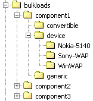

You can use the AssetLoaderCLI command line utility to load large numbers of MCS image components and their variants from the file system or a URL to an XML repository in a single operation.
You specify a target policy folder and a source directory tree containing directories named for each component, and sub-directories for each variant type ('device', 'convertible' or 'generic'). These subdirectories must be named with these reserved words, and contain only the number of variants allowed for the variant type; that is one variant each for device-specific and convertible images, and multiple variants for generic variants. Below this level the directory names must conform to the exact names in the device policy tree.
In the figure, 'component1' contains a directory for each of the three asset types, and three devices in the device-specific directory.

When MCS loads the images, it creates a series of image components in the target policy folder, with variants of the type in the sub folders. Image metadata is also interpreted to generate the necessary attributes automatically.
You can rerun the loader at any time following a change to one or more images by using the replace parameter.
You'll find the loader script AssetLoaderCLI in the MCS/bin directory.
| Parameter | Description |
|---|---|
| -folder | Folder name to prepend to the components |
| -assetgroup | Variant group to assign to all image variants |
| -devicerepository | Required. The .mdpr file containing device information |
| -replace | If specified, deletes the target component and all of its variants before being importing |
| -repository | Required. The root of the target XML repository |
| -srcdir | Required. The root of the source directory structure |
| -verbose | If specified will cause verbose logging to be output |
| -widthhint | If specified defines the 'widthhint' attribute for a generic image variant. The default is 100. |
AssetLoaderCLI[-folder <folder>
-assetgroup <assetgroup>
-devicerepository <devicerepository>
-replace
-repository <repository>
-srcdir <srcdir>
-verbose <verbose>
-widthhint <widthhint>]
Related topics
Administering MCS